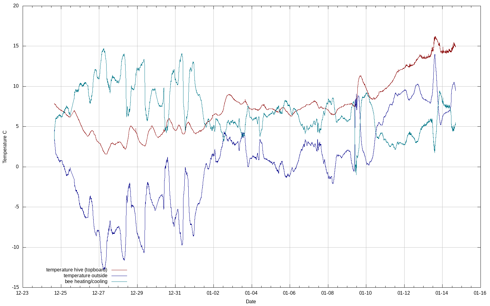
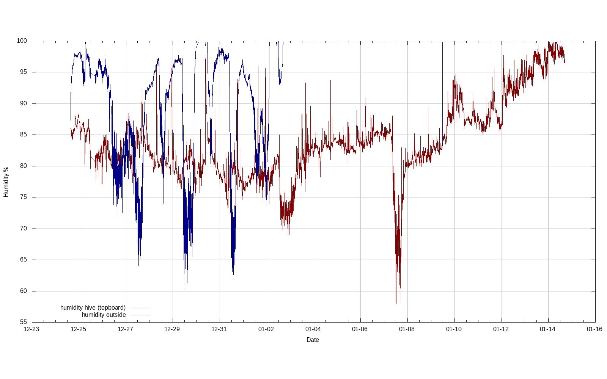

The red line shows the temperature in the hive, right above the top board. The hive is wrapped in roofing felt and has 5cm of foamboard insulation on the sides, and 10cm on the top.
The blue line shows the outside temperature near the hive, about 2m above the ground.
The red line shows humidity in the hive, right above the top board. The hive is wrapped in roofing felt and has 5cm of foamboard insulation on the sides, and 10cm on the top. This has been constantly around 85% for a month, which suggests the bees are expelling a significant amount of moisture. Looking forward to spring, when we can put the sensors in the middle of the hive.
The blue line shows the outside humidity near our hive.
See this page for current hive conditions.